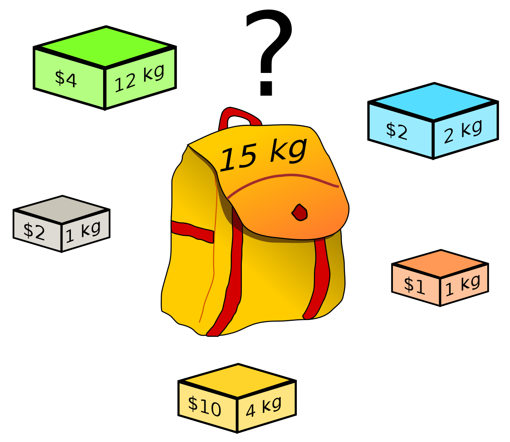
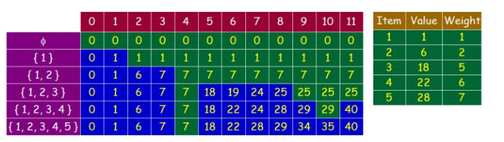

0-1背包问题
问题定义
维基百科定义如下：
Given a set of items, each with a weight and a value, determine the number of each item to include in a collection so that the total weight is less than or equal to a given limit and the total value is as large as possible. It derives its name from the problem faced by someone who is constrained by a fixed-size knapsack and must fill it with the most valuable items.

举例：
如上图所示有 5 个物品，它们有各自的重量和价值，现有给定容量的背包(15kg)，如何让背包里装入的物品具有最大的价值总和。
| 1 | 2 | 3 | 4 | 5 | |
|---|---|---|---|---|---|
| weight | 2 | 1 | 4 | 1 | 12 |
| value | 3 | 2 | 10 | 2 | 4 |
求解思路
变量定义：wt[i]表示每个物品的重量; val[i]表示每个物品的价值，0 <= i <= n。背包能放入的最大容量为 W (大写)。
- 确定状态：背包问题中的状态是一张二维表。
其中：行号(i)表示物品编号，第0行表示什么物品都不放在包里。列号(w)表示当前包里最大能放的重量。每个单元格用f[i][w]表示，含义为 当背包容量 w 时，前 i 个物品的最佳组合放入背包的最大价值。
| | 0 | 1 | 2 | 3 | 4 | 5 | 6 | 7 | 8 | 9 | 10 | 11 | 12 | 13 | 14 | 15 |
| :—-: | :—-: | :—-: | :—-: | :—-: | :—-: | :—-: | :—-: | :—-: | :—-: | :—-: | :—-: | :—-: | :—-: | :—-: | :—-: | :—-: |
| 0 |0|0|0|0|0|0|0|0|0|0|0|0|0|0|0|0|
| 1 | 0 | | | | | | | | | | | | | | | |
| 2 | 0 | | | | | | | | | | | | | | | |
| 3 | 0 | | | | | | | | | | | | | | | |
| 4 | 0 | | | | | | | | | | | | | | | |
| 5 | 0 | | | | | | | | | | | | | | | | 确定递推公式：
对于上述背包问题只需要正确填写上述二维表，f[n][W]即是满足要求的解。
考察 3 中情形：- i = 0 or w = 0: 分别表示背包中不放入物品和背包容量为0。此时的最大价值
f[i][w] = 0； - 第 i 个物品重量过大 (wt[i]> w)， 此时第i个物品放不到包里面,
f[i][W] = f[i-1][W]； - 第 i 个物品可以放入包中，分两种情况：a) 第 i 个物品放入包里，包内物品的价值为
f[i-1][w-wt[i]] + val[i]。 b) 第i个物品不放入包里， 包内物品的价值为f[i-1][w]。f[i][W]为其最大值：f[i][W] = max{f[i-1][w-wt[i]] + val[i], f[i-1][w]}。
总价如下：
$$
f[i][W] =
\left \{
\begin {align}
& 0,& i = 0 or w = 0 \\
& f[i-1][w] ,& wt[i]> w \\
& \max \{f[i-1][w-wt[i]] + val[i], f[i-1][w]\},& other
\end {align}
\right .
$$- i = 0 or w = 0: 分别表示背包中不放入物品和背包容量为0。此时的最大价值
实现代码及优化
1 |
|
空间复杂度优化：通过观察上面的递推公式可以发现， 二维表的 第 i 行只与 第 i-1 行有关， 所以在内存中只需要保留上一行的值。
1 |
|
进一步优化
设想这么一种情形，例题中每个物品的价值不变， 每个物品的重量 分别扩大10倍 100倍 1532倍 … 不等(就是分别扩大若干倍)。按照上面的解题思路，二维表的列数就会增加非常多，而空间复杂度也相应增加。针对这种现象我们可以采用压缩的一维表的方式存储：
下图为知乎: 0-1背包问题的动态规划算法对这种方法的分析：右边为5个物品的价值和重量，左图为二维表。

蓝色单元格为每个行中 状态发生变化的单元格，此时 f[i][w] = val[i - 1] + f[i - 1][w - wt[i - 1]]，即第i个物品被放入背包。所有绿色单元格的值都等于其前面的蓝色单元格的值。
所以我们只需要保存每一行的蓝色单元格的值即能达到降低空间复杂度的目的。
完全背包问题
问题定义
在n种物品中选取若干件（同一种物品可多次选取）放在最大承重为W的背包里，每种物品的重量为wt[i]，与之相对应的价值为val[i]。求解怎么装物品可使背包里物品总价值最大。
完全背包问题与01背包问题的区别在于完全背包每一件物品的数量都有无限个，而01背包每件物品数量只有1个。
求解思路
确定状态：使用和01背包一样的状态，
f[i][w]表示前 i 种物品放入一个容量为 w 的背包的最大价值。 其实还可以使用上图所示的二维表表示。对于每一个单元格，我们用 k 表示容量 w 下可以装第 i 种物品的件数，那么k的范围应该是0 <= k <= w/wt[i]。状态转移公式：
还可以像 0 1 背包问题 将问题分解问三种情形讨论。不同之处在于 当第 i 种物品放入背包时，需要遍历 k 可能的取值。
$$
f[i][W] =
\left \{
\begin {align}
& 0,& i = 0 or w = 0 \\
& f[i-1][w] ,& wt[i]> w \\
& \max_{k \in [0, \frac{w}{wt[i]}]} \{f[i-1][w-k \times wt[i]] + k \times val[i], f[i-1][w]\},& other
\end {align}
\right .
$$
另一种思路：我们可以把把完全背包问题转化为01背包问题来解，第i种物品最多选w/wt[i]件，于是可以把第 i种物品转化为w/wt[i]件物品，然后求解这个01背包问题。同样可以使用 01 背包问题的优化方法进行优化。
实现代码及优化
1 |
|
多重背包问题
问题描述：有n种物品和一个容量为W的背包。第 i 种物品的数量为k[i]，重量为 wt[i]，价值是val[i]。这个背包最多能够装多少价值的物品。
其实就是将完全背包问题中 k 的最大值设置为 k[i]。 思路和代码不再赘述。